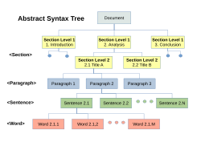
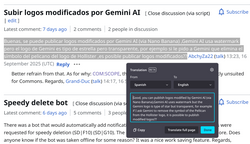

Natural language processing
This article has multiple issues. Please help improve it or discuss these issues on the talk page. (Learn how and when to remove these messages)
|


| Part of a series on |
| Artificial intelligence (AI) |
|---|
| Glossary |
Natural language processing (NLP) is the processing of natural language information by a computer. NLP is a subfield of computer science and is closely associated with artificial intelligence. NLP is also related to information retrieval, knowledge representation, computational linguistics, and linguistics more broadly.[1]
Major processing tasks in an NLP system include: speech recognition, text classification, natural language understanding, and natural language generation.
History
[edit]Natural language processing has its roots in the 1950s.[2] Already in 1950, Alan Turing published an article titled "Computing Machinery and Intelligence," which proposed what is now called the Turing test as a criterion of intelligence, though at the time that was not articulated as a problem separate from artificial intelligence. The proposed test includes a task that involves the automated interpretation and generation of natural language.
Symbolic NLP (1950s – early 1990s)
[edit]

The premise of symbolic NLP is often illustrated using John Searle's Chinese room thought experiment: Given a collection of rules (e.g., a Chinese phrasebook, with questions and matching answers), the computer emulates natural language understanding (or other NLP tasks) by applying those rules to the data it confronts.
- 1950s: The Georgetown experiment in 1954 involved fully automatic translation of more than sixty Russian sentences into English. The authors claimed that within three or five years, machine translation would be a solved problem.[3] However, real progress was much slower, and after the ALPAC report in 1966, which found that ten years of research had failed to fulfill the expectations, funding for machine translation was dramatically reduced. Little further research in machine translation was conducted in America (though some research continued elsewhere, such as Japan and Europe[4]) until the late 1980s when the first statistical machine translation systems were developed.
- 1960s: Some notably successful natural language processing systems developed in the 1960s were SHRDLU, a natural language system working in restricted "blocks worlds" with restricted vocabularies, and ELIZA, a simulation of Rogerian psychotherapy, written by Joseph Weizenbaum between 1964 and 1966. Despite using minimal information about human thought or emotion, ELIZA was able to produce interactions that appeared human-like. When the "patient" exceeded the very small knowledge base, ELIZA might provide a generic response, for example, responding to "My head hurts" with "Why do you say your head hurts?". Ross Quillian's successful work on natural language was demonstrated with a vocabulary of only twenty words, because that was all that would fit in a computer memory at the time.[5]
- 1970s: During the 1970s, many programmers began to write "conceptual ontologies", which structured real-world information into computer-understandable data. Examples are MARGIE (Schank, 1975), SAM (Cullingford, 1978), PAM (Wilensky, 1978), TaleSpin (Meehan, 1976), QUALM (Lehnert, 1977), Politics (Carbonell, 1979), and Plot Units (Lehnert 1981). During this time, the first chatterbots were written (e.g., PARRY).
- 1980s: The 1980s and early 1990s mark the heyday of symbolic methods in NLP. Focus areas of the time included research on rule-based parsing (e.g., the development of HPSG as a computational operationalization of generative grammar), morphology (e.g., two-level morphology[6]), semantics (e.g., Lesk algorithm), reference (e.g., within Centering Theory[7]) and other areas of natural language understanding (e.g., in the Rhetorical Structure Theory). Other lines of research were continued, e.g., the development of chatterbots with Racter and Jabberwacky. An important development (that eventually led to the statistical turn in the 1990s) was the rising importance of quantitative evaluation in this period.[8]
Statistical NLP (1990s–present)
[edit]Up until the 1980s, most natural language processing systems were based on complex sets of hand-written rules. Starting in the late 1980s, however, there was a revolution in natural language processing with the introduction of machine learning algorithms for language processing. This shift was influenced by increasing computational power (see Moore's law) and a decline in the dominance of Chomskyan linguistic theories (e.g. transformational grammar), whose theoretical underpinnings discouraged the sort of corpus linguistics that underlies the machine-learning approach to language processing.[9]
- 1990s: Many early successes of statistical NLP occurred in machine translation, particularly through work at IBM Research. An IBM team including Frederick Jelinek, Peter F. Brown, and Robert Mercer developed a probabilistic approach to translation, described in the 1990 paper A Statistical Approach to Machine Translation.[10] The work used parallel English and French text from the proceedings of the Parliament of Canada and was subsequently developed into the IBM alignment models.[11][12] However, such systems often depended on large task-specific corpora, making the availability of suitable training data an important limitation.
- 2000s: With the growth of the web, increasing amounts of raw (unannotated) language data have become available since the mid-1990s. Research has thus increasingly focused on unsupervised and semi-supervised learning algorithms. Such algorithms can learn from data that has not been hand-annotated with the desired answers or using a combination of annotated and non-annotated data. Generally, this task is much more difficult than supervised learning, and typically produces less accurate results for a given amount of input data. However, large quantities of non-annotated data are available (including, among other things, the entire content of the World Wide Web), which can often make up for the worse efficiency if the algorithm used has a low enough time complexity to be practical.
- 2003: word n-gram model, at the time the best statistical algorithm, is outperformed by a multi-layer perceptron (with a single hidden layer and context length of several words, trained on up to 14 million words, by Bengio et al.)[13]
- 2010: Tomáš Mikolov (then a PhD student at Brno University of Technology) with co-authors applied a simple recurrent neural network with a single hidden layer to language modeling,[14] and in the following years he went on to develop Word2vec. In the 2010s, representation learning and deep neural network-style (featuring many hidden layers) machine learning methods became widespread in natural language processing. This shift gained momentum due to results showing that such techniques[15][16] can achieve state-of-the-art results in many natural language tasks, e.g., in language modeling[17] and parsing.[18][19] This is increasingly important in medicine and healthcare, where NLP helps analyze notes and text in electronic health records that would otherwise be inaccessible for study when seeking to improve care[20] or protect patient privacy.[21]
Approaches: Symbolic, statistical, neural networks
[edit]Symbolic approach, i.e., the hand-coding of a set of rules for manipulating symbols, coupled with a dictionary lookup, was historically the first approach used both by AI in general and by NLP in particular:[22][23] such as by writing grammars or devising heuristic rules for stemming.
Machine learning approaches, which include both statistical and neural networks, on the other hand, have many advantages over the symbolic approach:
- both statistical and neural network methods tend to focus more on the most common cases extracted from a corpus of texts, whereas the rule-based approach needs to provide rules for both rare and common cases equally.
- language models, produced by either statistical or neural network methods, are more robust to both unfamiliar (e.g. containing words or structures that have not been seen before) and erroneous input (e.g. with misspelled words or words accidentally omitted) in comparison to the rule-based systems, which are also more costly to produce.
- the larger such a (probabilistic) language model is, the more accurate it becomes, in contrast to rule-based systems that can gain accuracy only by increasing the amount and complexity of the rules leading to intractability problems.
Rule-based systems are commonly used:
- when the amount of training data is insufficient to successfully apply machine learning methods, e.g., for the machine translation of low-resource languages such as provided by the Apertium system,
- for preprocessing in NLP pipelines, e.g., tokenization, or
- for post-processing and transforming the output of NLP pipelines, e.g., for knowledge extraction from syntactic parses.
Statistical approach
[edit]In the late 1980s and mid-1990s, the statistical approach ended a period of AI winter, which was caused by the inefficiencies of the rule-based approaches.[24][25]
The earliest decision trees, producing systems of hard if–then rules, were still very similar to the old rule-based approaches. Only the introduction of hidden Markov models, applied to part-of-speech tagging, announced the end of the old rule-based approach.
Neural networks
[edit]A major drawback of statistical methods is that they require elaborate feature engineering. Since 2015,[26] neural network–based methods have increasingly replaced traditional statistical approaches, using semantic networks[27] and word embeddings to capture semantic properties of words.
Intermediate tasks (e.g., part-of-speech tagging and dependency parsing) are not needed anymore.
Neural machine translation, based on the then-newly invented sequence-to-sequence transformations, made obsolete the intermediate steps, such as word alignment, previously necessary for statistical machine translation.
Common NLP tasks
[edit]The following is a list of some of the most commonly researched tasks in natural language processing. Some of these tasks have direct real-world applications, while others more commonly serve as subtasks that are used to aid in solving larger tasks.
Though natural language processing tasks are closely intertwined, they can be subdivided into categories for convenience. A coarse division is given below.
Text and speech processing
[edit]
- Optical character recognition (OCR)
- Given an image representing printed text, determine the corresponding text.
- Speech recognition
- Given a sound clip of a person or people speaking, determine the textual representation of the speech. This is the opposite of text to speech and is one of the extremely difficult problems colloquially termed "AI-complete" (see above). In natural speech there are hardly any pauses between successive words, and thus speech segmentation is a necessary subtask of speech recognition (see below). In most spoken languages, the sounds representing successive letters blend into each other in a process termed coarticulation, so the conversion of the analog signal to discrete characters can be a very difficult process. Also, given that words in the same language are spoken by people with different accents, the speech recognition software must be able to recognize the wide variety of input as being identical to each other in terms of its textual equivalent.
- Speech segmentation
- Given a sound clip of a person or people speaking, separate it into words. A subtask of speech recognition and typically grouped with it.
- Text-to-speech
- Given a text, transform those units and produce a spoken representation. Text-to-speech can be used to aid the visually impaired.[28]
- Word segmentation (Tokenization)
- Tokenization is a text-processing technique that divides text into individual words or word fragments. This technique results in two key components: a word index and tokenized text. The word index is a list that maps unique words to specific numerical identifiers, and the tokenized text replaces each word with its corresponding numerical token. These numerical tokens are then used in various deep learning methods.[29]
- For a language like English, this is fairly trivial, since words are usually separated by spaces. However, some written languages like Chinese, Japanese and Thai do not mark word boundaries in such a fashion, and in those languages text segmentation is a significant task requiring knowledge of the vocabulary and morphology of words in the language. Sometimes this process is also used in cases like bag of words (BOW) creation in data mining.[30][31]
Morphological analysis
[edit]
- Lemmatization
- The task of removing inflectional endings only and returning the base dictionary form of a word which is also known as a lemma. Lemmatization is another technique for reducing words to their normalized form. But in this case, the transformation actually uses a dictionary to map words to their actual form.[32]
- Morphological segmentation
- Separate words into individual morphemes and identify the class of the morphemes. The difficulty of this task depends greatly on the complexity of the morphology (i.e., the structure of words) of the language being considered. English has fairly simple morphology, especially inflectional morphology, and thus it is often possible to ignore this task entirely and simply model all possible forms of a word (e.g., "open, opens, opened, opening") as separate words. In languages such as Turkish or Meitei, a highly agglutinated Indian language, however, such an approach is not possible, as each dictionary entry has thousands of possible word forms.[33]
- Part-of-speech tagging
- Given a sentence, determine the part of speech (POS) for each word. Many words, especially common ones, can serve as multiple parts of speech. For example, "book" can be a noun ("the book on the table") or verb ("to book a flight"); "set" can be a noun, verb or adjective; and "out" can be any of at least five different parts of speech.
- Stemming
- The process of reducing inflected (or sometimes derived) words to a base form (e.g., "close" will be the root for "closed", "closing", "close", "closer" etc.). Stemming yields similar results as lemmatization, but does so on grounds of rules, not a dictionary.
Syntactic analysis
[edit]| Part of a series on |
| Formal languages |
|---|
- Grammar induction[34]
- Generate a formal grammar that describes a language's syntax.
- Sentence breaking (also known as "sentence boundary disambiguation")
- Given a chunk of text, find the sentence boundaries. Sentence boundaries are often marked by periods or other punctuation marks, but these same characters can serve other purposes (e.g., marking abbreviations).
- Parsing
- Determine the parse tree (grammatical analysis) of a given sentence. The grammar for natural languages is ambiguous and typical sentences have multiple possible analyses: perhaps surprisingly, for a typical sentence there may be thousands of potential parses (most of which will seem completely nonsensical to a human). There are two primary types of parsing: dependency parsing and constituency parsing. Dependency parsing focuses on the relationships between words in a sentence (marking things like primary objects and predicates), whereas constituency parsing focuses on building out the parse tree using a probabilistic context-free grammar (PCFG) (see also stochastic grammar).
Lexical semantics (of individual words in context)
[edit]
- Lexical semantics
- What is the computational meaning of individual words in context?
- Distributional semantics
- How can we learn semantic representations from data?
- Named entity recognition (NER)
- Given a stream of text, determine which items in the text map to proper names, such as people or places, and what the type of each such name is (e.g. person, location, organization). Although capitalization can aid in recognizing named entities in languages such as English, this information cannot aid in determining the type of named entity, and in any case, is often inaccurate or insufficient. For example, the first letter of a sentence is also capitalized, and named entities often span several words, only some of which are capitalized. Furthermore, many other languages in non-Western scripts (e.g. Chinese or Arabic) do not have any capitalization at all, and even languages with capitalization may not consistently use it to distinguish names. For example, German capitalizes all nouns, regardless of whether they are names, and French and Spanish do not capitalize names that serve as adjectives. This task is also referred to as token classification.[35]
- Sentiment analysis (see also Multimodal sentiment analysis)
- Sentiment analysis involves identifying and classifying the emotional tone expressed in text. This technique involves analyzing text to determine whether the expressed sentiment is positive, negative, or neutral. Models for sentiment classification typically utilize inputs such as word n-grams, Term Frequency-Inverse Document Frequency (TF-IDF) features, hand-generated features, or employ deep learning models designed to recognize both long-term and short-term dependencies in text sequences. The applications of sentiment analysis are diverse, extending to tasks such as categorizing customer reviews on various online platforms.[29]
- Terminology extraction
- The goal of terminology extraction is to automatically extract relevant terms from a given corpus.
- Word-sense disambiguation (WSD)
- Many words have more than one meaning; we have to select the meaning which makes the most sense in context. For this problem, we are typically given a list of words and associated word senses, e.g. from a dictionary or an online resource such as WordNet.
- Entity linking
- Many words—typically proper names—refer to named entities; here we have to select the entity (a famous individual, a location, a company, etc.) which is referred to in context.
Relational semantics (semantics of individual sentences)
[edit]- Relationship extraction
- Given a chunk of text, identify the relationships among named entities (e.g. who is married to whom).
- Semantic parsing
- Given a piece of text (typically a sentence), produce a formal representation of its semantics, either as a graph (e.g., in AMR parsing) or in accordance with a logical formalism (e.g., in DRT parsing). This challenge typically includes aspects of several more elementary NLP tasks from semantics (e.g., semantic role labelling, word-sense disambiguation) and can be extended to include full-fledged discourse analysis (e.g., discourse analysis, coreference; see Natural language understanding below).
- Semantic role labelling (see also implicit semantic role labelling below)
- Given a single sentence, identify and disambiguate semantic predicates (e.g., verbal frames), then identify and classify the frame elements (semantic roles).
Discourse (semantics beyond individual sentences)
[edit]- Coreference resolution
- Given a sentence or larger chunk of text, determine which words ("mentions") refer to the same objects ("entities"). Anaphora resolution is a specific example of this task, and is specifically concerned with matching up pronouns with the nouns or names to which they refer. The more general task of coreference resolution also includes identifying so-called "bridging relationships" involving referring expressions. For example, in a sentence such as "He entered John's house through the front door", "the front door" is a referring expression and the bridging relationship to be identified is the fact that the door being referred to is the front door of John's house (rather than of some other structure that might also be referred to).
- Discourse analysis
- This rubric includes several related tasks. One task is discourse parsing, i.e., identifying the discourse structure of a connected text, i.e. the nature of the discourse relationships between sentences (e.g. elaboration, explanation, contrast). Another possible task is recognizing and classifying the speech acts in a chunk of text (e.g. yes–no question, content question, statement, assertion, etc.).
- Implicit semantic role labelling
- Given a single sentence, identify and disambiguate semantic predicates (e.g., verbal frames) and their explicit semantic roles in the current sentence (see Semantic role labelling above). Then, identify semantic roles that are not explicitly realized in the current sentence, classify them into arguments that are explicitly realized elsewhere in the text and those that are not specified, and resolve the former against the local text. A closely related task is zero anaphora resolution, i.e., the extension of coreference resolution to pro-drop languages.
- Recognizing textual entailment
- Given two text fragments, determine if one being true entails the other, entails the other's negation, or allows the other to be either true or false.[36]
- Topic segmentation and recognition
- Given a chunk of text, separate it into segments each of which is devoted to a topic, and identify the topic of the segment.
- Argument mining
- The goal of argument mining is the automatic extraction and identification of argumentative structures from natural language text with the aid of computer programs.[37] Such argumentative structures include the premise, conclusions, the argument scheme and the relationship between the main and subsidiary argument, or the main and counter-argument within discourse.[38][39]
Higher-level NLP applications
[edit]

- Automatic summarization (text summarization)
- Produce a readable summary of a chunk of text. Often used to provide summaries of the text of a known type, such as research papers, articles in the financial section of a newspaper.
- Grammatical error correction
- Grammatical error detection and correction involves a great bandwidth of problems on all levels of linguistic analysis (phonology/orthography, morphology, syntax, semantics, pragmatics). Grammatical error correction is impactful since it affects hundreds of millions of people who use or acquire English as a second language. It has thus been subject to a number of shared tasks since 2011.[40][41][42] As far as orthography, morphology, syntax and certain aspects of semantics are concerned, and due to the development of powerful neural language models such as GPT-2, this can now (2019) be considered a largely solved problem and is being marketed in various commercial applications.
- Logic translation
- Translate a text from a natural language into formal logic.
- Machine translation (MT)
- Automatically translate text from one human language to another. This is one of the most difficult problems, and is a member of a class of problems colloquially termed "AI-complete", i.e. requiring all of the different types of knowledge that humans possess (grammar, semantics, facts about the real world, etc.) to solve properly.
- Natural language understanding (NLU)
- Convert chunks of text into more formal representations such as first-order logic structures that are easier for computer programs to manipulate. Natural language understanding involves the identification of the intended semantic from the multiple possible semantics that can be derived from a natural language expression which usually takes the form of organized notations of natural language concepts. Introduction and creation of language metamodels and ontologies are efficient but empirical solutions. An explicit formalization of natural language semantics without confusion with implicit assumptions such as closed-world assumption (CWA) vs. open-world assumption, or subjective Yes/No vs. objective True/False is expected for the construction of a basis of semantics formalization.[43]
- Natural language generation (NLG):
- Convert information from computer databases or semantic intents into readable human language.
- Book generation
- Not an NLP task proper but an extension of natural language generation and other NLP tasks is the creation of full-fledged books. The first machine-generated book was created by a rule-based system in 1984 (Racter, The policeman's beard is half-constructed).[44] The first published work by a neural network was published in 2018, 1 the Road, marketed as a novel, contains sixty million words. Both these systems are basically elaborate but nonsensical (semantics-free) language models. The first machine-generated science book was published in 2019 (Beta Writer, Lithium-Ion Batteries, Springer, Cham).[45] Unlike Racter and 1 the Road, this is grounded on factual knowledge and based on text summarization.
- Document AI
- A Document AI platform sits on top of the NLP technology enabling users with no prior experience of artificial intelligence, machine learning or NLP to quickly train a computer to extract the specific data they need from different document types. NLP-powered Document AI enables non-technical teams to quickly access information hidden in documents, for example, lawyers, business analysts and accountants.[46]
- Dialogue management
- Computer systems intended to converse with a human.
- Question answering
- Given a human-language question, determine its answer. Typical questions have a specific right answer (such as "What is the capital of Canada?"), but sometimes open-ended questions are also considered (such as "What is the meaning of life?").
- Text-to-image generation
- Given a description of an image, generate an image that matches the description.[47]
- Text-to-scene generation
- Given a description of a scene, generate a 3D model of the scene.[48][49]
- Text-to-video
- Given a description of a video, generate a video that matches the description.[50][51]
General tendencies and (possible) future directions
[edit]Based on long-standing trends in the field, it is possible to extrapolate future directions of NLP. As of 2020, three trends among the topics of the long-standing series of CoNLL Shared Tasks can be observed:[52]
- Interest in increasingly abstract, "cognitive" aspects of natural language (1999–2001: shallow parsing, 2002–03: named entity recognition, 2006–09/2017–18: dependency syntax, 2004–05/2008–09 semantic role labelling, 2011–12 coreference, 2015–16: discourse parsing, 2019: semantic parsing).
- Increasing interest in multilinguality, and, potentially, multimodality (English since 1999; Spanish, Dutch since 2002; German since 2003; Bulgarian, Danish, Japanese, Portuguese, Slovenian, Swedish, Turkish since 2006; Basque, Catalan, Chinese, Greek, Hungarian, Italian, Turkish since 2007; Czech since 2009; Arabic since 2012; 2017: 40+ languages; 2018: 60+/100+ languages)
- Elimination of symbolic representations (rule-based over supervised towards weakly supervised methods, representation learning and end-to-end systems)
Cognition
[edit]Most higher-level NLP applications involve aspects that emulate intelligent behavior and apparent comprehension of natural language. More broadly speaking, the technical operationalization of increasingly advanced aspects of cognitive behavior represents one of the developmental trajectories of NLP(see trends among CoNLL shared tasks above).
Cognition refers to "the mental action or process of acquiring knowledge and understanding through thought, experience, and the senses."[53] Cognitive science is the interdisciplinary, scientific study of the mind and its processes.[54] Cognitive linguistics is an interdisciplinary branch of linguistics, combining knowledge and research from both psychology and linguistics.[55] Especially during the age of symbolic NLP, the area of computational linguistics maintained strong ties with cognitive studies.
As an example, George Lakoff offers a methodology to build natural language processing (NLP) algorithms through the perspective of cognitive science, along with the findings of cognitive linguistics,[56] with two defining aspects:
- Apply the theory of conceptual metaphor, explained by Lakoff as "the understanding of one idea, in terms of another" which provides an idea of the intent of the author.[57] For example, consider the English word big. When used in a comparison ("That is a big tree"), the author intends to imply that the tree is physically large relative to other trees or the author's experience. When used metaphorically ("Tomorrow is a big day"), the author intends to imply importance. The intent behind other usages, like in "She is a big person", will remain somewhat ambiguous to a person and a cognitive NLP algorithm alike without additional information.
- Assign relative measures of meaning to a word, phrase, sentence or piece of text based on the information presented before and after the piece of text being analyzed, e.g., by means of a probabilistic context-free grammar (PCFG). The mathematical equation for such algorithms is presented in US Patent 9269353:[58]
- Where
- RMM is the relative measure of meaning
- token is any block of text, sentence, phrase or word
- N is the number of tokens being analyzed
- PMM is the probable measure of meaning based on a corpora
- d is the non-zero location of the token along the sequence of N tokens
- PF is the probability function specific to a language
- Where
Ties with cognitive linguistics are part of the historical heritage of NLP, but they have been less frequently addressed since the statistical turn during the 1990s. Nevertheless, approaches to develop cognitive models towards technically operationalizable frameworks have been pursued in the context of various frameworks, e.g., of cognitive grammar,[59] functional grammar,[60] construction grammar,[61] computational psycholinguistics and cognitive neuroscience (e.g., ACT-R), however, with limited uptake in mainstream NLP (as measured by presence on major conferences[62] of the ACL). More recently, ideas of cognitive NLP have been revived as an approach to achieve explainability, e.g., under the notion of "cognitive AI".[63] Likewise, ideas of cognitive NLP are inherent to neural models multimodal NLP (although rarely made explicit)[64] and developments in artificial intelligence, specifically tools and technologies using large language model approaches[65] and new directions in artificial general intelligence based on the free energy principle[66] by British neuroscientist and theoretician at University College London Karl J. Friston.
See also
[edit]- 1 the Road
- Artificial intelligence detection software
- Automated essay scoring
- Biomedical text mining
- Compound term processing
- Computational linguistics
- Computer-assisted reviewing
- Controlled natural language
- Deep learning
- Deep linguistic processing
- Distributional semantics
- Foreign language reading aid
- Foreign language writing aid
- Information extraction
- Information retrieval
- Language and Communication Technologies
- Language model
- Language technology
- Latent semantic indexing
- Multi-agent system
- Native-language identification
- Natural-language programming
- Natural-language understanding
- Natural-language search
- Outline of natural language processing
- Query expansion
- Query understanding
- Reification (linguistics)
- Speech processing
- Spoken dialogue systems
- Text-proofing
- Text simplification
- Transformer (machine learning model)
- Truecasing
- Question answering
- Word2vec
References
[edit]- ↑ Eisenstein, Jacob (October 1, 2019). Introduction to Natural Language Processing. The MIT Press. p. 1. ISBN 978-0-262-04284-0.
- ↑ "NLP".
- ↑ Hutchins, J. (2005). "The history of machine translation in a nutshell" (PDF). Archived from the original (PDF) on 2019-07-13. Retrieved 2019-02-04.[self-published source]
- ↑ "ALPAC: the (in)famous report", John Hutchins, MT News International, no. 14, June 1996, pp. 9–12.
- ↑ Crevier 1993, pp. 146–148, see also Buchanan 2005, p. 56: "Early programs were necessarily limited in scope by the size and speed of memory"
- ↑ Koskenniemi, Kimmo (1983), Two-level morphology: A general computational model of word-form recognition and production (PDF), Department of General Linguistics, University of Helsinki, archived from the original (PDF) on 2018-12-21, retrieved 2020-08-20
- ↑ Joshi, A. K., & Weinstein, S. (1981, August). Control of Inference: Role of Some Aspects of Discourse Structure-Centering. In IJCAI (pp. 385–387).
- ↑ Guida, G.; Mauri, G. (July 1986). "Evaluation of natural language processing systems: Issues and approaches". Proceedings of the IEEE. 74 (7): 1026–1035. Bibcode:1986IEEEP..74.1026G. doi:10.1109/PROC.1986.13580. ISSN 1558-2256. S2CID 30688575.
- ↑ Chomskyan linguistics encourages the investigation of "corner cases" that stress the limits of its theoretical models (comparable to pathological phenomena in mathematics), typically created using thought experiments, rather than the systematic investigation of typical phenomena that occur in real-world data, as is the case in corpus linguistics. The creation and use of such corpora of real-world data is a fundamental part of machine-learning algorithms for natural language processing. In addition, theoretical underpinnings of Chomskyan linguistics such as the so-called "poverty of the stimulus" argument entail that general learning algorithms, as are typically used in machine learning, cannot be successful in language processing. As a result, the Chomskyan paradigm discouraged the application of such models to language processing.
- ↑ Brown, Peter F.; Cocke, John; Della Pietra, Stephen A.; Della Pietra, Vincent J.; Jelinek, Fredrick; Lafferty, John D.; Mercer, Robert L.; Roossin, Paul S. (1990). "A Statistical Approach to Machine Translation". Computational Linguistics. 16 (2): 79–85.
- ↑ Jelinek, Frederick (2009). "ACL Lifetime Achievement Award: The Dawn of Statistical ASR and MT". Computational Linguistics. 35 (4): 483–494. doi:10.1162/coli.2009.35.4.35401.
- ↑ Brown, Peter F.; Della Pietra, Stephen A.; Della Pietra, Vincent J.; Mercer, Robert L. (1993). "The Mathematics of Statistical Machine Translation: Parameter Estimation". Computational Linguistics. 19 (2): 263–311.
- ↑ Bengio, Yoshua; Ducharme, Réjean; Vincent, Pascal; Janvin, Christian (March 1, 2003). "A neural probabilistic language model". The Journal of Machine Learning Research. 3: 1137–1155 – via ACM Digital Library.
- ↑ Mikolov, Tomáš; Karafiát, Martin; Burget, Lukáš; Černocký, Jan; Khudanpur, Sanjeev (26 September 2010). "Recurrent neural network based language model" (PDF). Interspeech 2010. pp. 1045–1048. doi:10.21437/Interspeech.2010-343. S2CID 17048224.
{{cite book}}:|journal=ignored (help) - ↑ Goldberg, Yoav (2016). "A Primer on Neural Network Models for Natural Language Processing". Journal of Artificial Intelligence Research. 57: 345–420. arXiv:1807.10854. doi:10.1613/jair.4992. S2CID 8273530.
- ↑ Goodfellow, Ian; Bengio, Yoshua; Courville, Aaron (2016). Deep Learning. MIT Press.
- ↑ Jozefowicz, Rafal; Vinyals, Oriol; Schuster, Mike; Shazeer, Noam; Wu, Yonghui (2016). Exploring the Limits of Language Modeling. arXiv:1602.02410. Bibcode:2016arXiv160202410J.
- ↑ Choe, Do Kook; Charniak, Eugene. "Parsing as Language Modeling". Emnlp 2016. Archived from the original on 2018-10-23. Retrieved 2018-10-22.
- ↑ Vinyals, Oriol; et al. (2014). "Grammar as a Foreign Language" (PDF). Nips2015. arXiv:1412.7449. Bibcode:2014arXiv1412.7449V.
- ↑ Turchin, Alexander; Florez Builes, Luisa F. (2021-03-19). "Using Natural Language Processing to Measure and Improve Quality of Diabetes Care: A Systematic Review". Journal of Diabetes Science and Technology. 15 (3): 553–560. doi:10.1177/19322968211000831. ISSN 1932-2968. PMC 8120048. PMID 33736486.
- ↑ Lee, Jennifer; Yang, Samuel; Holland-Hall, Cynthia; Sezgin, Emre; Gill, Manjot; Linwood, Simon; Huang, Yungui; Hoffman, Jeffrey (2022-06-10). "Prevalence of Sensitive Terms in Clinical Notes Using Natural Language Processing Techniques: Observational Study". JMIR Medical Informatics. 10 (6) e38482. doi:10.2196/38482. ISSN 2291-9694. PMC 9233261. PMID 35687381.
- ↑ Winograd, Terry (1971). Procedures as a Representation for Data in a Computer Program for Understanding Natural Language (Thesis).
- ↑ Schank, Roger C.; Abelson, Robert P. (1977). Scripts, Plans, Goals, and Understanding: An Inquiry Into Human Knowledge Structures. Hillsdale: Erlbaum. ISBN 0-470-99033-3.
- ↑ Mark Johnson. How the statistical revolution changes (computational) linguistics. Proceedings of the EACL 2009 Workshop on the Interaction between Linguistics and Computational Linguistics.
- ↑ Philip Resnik. Four revolutions. Language Log, February 5, 2011.
- ↑ Socher, Richard. "Deep Learning For NLP-ACL 2012 Tutorial". www.socher.org. Archived from the original on 2021-04-14. Retrieved 2020-08-17. This was an early Deep Learning tutorial at the ACL 2012 and met with both interest and (at the time) skepticism by most participants. Until then, neural learning was basically rejected because of its lack of statistical interpretability. Until 2015, deep learning had evolved into the major framework of NLP. [Link is broken, try http://web.stanford.edu/class/cs224n/]
- ↑ Segev, Elad (2022). Semantic Network Analysis in Social Sciences. London: Routledge. ISBN 978-0-367-63652-4. Archived from the original on 5 December 2021. Retrieved 5 December 2021.
- ↑ Yi, Chucai; Tian, Yingli (2012), "Assistive Text Reading from Complex Background for Blind Persons", Camera-Based Document Analysis and Recognition, Lecture Notes in Computer Science, vol. 7139, Springer Berlin Heidelberg, pp. 15–28, doi:10.1007/978-3-642-29364-1_2, ISBN 978-3-642-29363-4
- 1 2 "Natural Language Processing (NLP) - A Complete Guide". www.deeplearning.ai. 2023-01-11. Retrieved 2024-05-05.
- ↑ "GeeksforGeeks. (n.d.). Tokenization in natural language processing (NLP). GeeksforGeeks". Geeksforgeeks. 25 June 2024.
- ↑ Torabi, Mohhamadreza; Ghasemi, Fahimeh. "Integrating data augmentation and BERT-based deep learning for predicting alpha-glucosidase inhibitors derived from Black Cohosh". Scientific Reports. 1 (1): 1–15. doi:10.1038/s41598-025-14699-1. PMC 12391535.
- ↑ "What is Natural Language Processing? Intro to NLP in Machine Learning". GyanSetu!. 2020-12-06. Retrieved 2021-01-09.
- ↑ Kishorjit, N.; Vidya, Raj RK.; Nirmal, Y.; Sivaji, B. (2012). "Manipuri Morpheme Identification" (PDF). Proceedings of the 3rd Workshop on South and Southeast Asian Natural Language Processing (SANLP). COLING 2012, Mumbai, December 2012: 95–108.
{{cite journal}}: CS1 maint: location (link) - ↑ Klein, Dan; Manning, Christopher D. (2002). "Natural language grammar induction using a constituent-context model" (PDF). Advances in Neural Information Processing Systems.
- ↑ Kariampuzha, William; Alyea, Gioconda; Qu, Sue; Sanjak, Jaleal; Mathé, Ewy; Sid, Eric; Chatelaine, Haley; Yadaw, Arjun; Xu, Yanji; Zhu, Qian (2023). "Precision information extraction for rare disease epidemiology at scale". Journal of Translational Medicine. 21 (1): 157. doi:10.1186/s12967-023-04011-y. PMC 9972634. PMID 36855134.
- ↑ PASCAL Recognizing Textual Entailment Challenge (RTE-7) https://tac.nist.gov//2011/RTE/
- ↑ Lippi, Marco; Torroni, Paolo (2016-04-20). "Argumentation Mining: State of the Art and Emerging Trends". ACM Transactions on Internet Technology. 16 (2): 1–25. doi:10.1145/2850417. hdl:11585/523460. ISSN 1533-5399. S2CID 9561587.
- ↑ "Argument Mining – IJCAI2016 Tutorial". www.i3s.unice.fr. Archived from the original on 2021-04-18. Retrieved 2021-03-09.
- ↑ "NLP Approaches to Computational Argumentation – ACL 2016, Berlin". Retrieved 2021-03-09.
- ↑ Administration. "Centre for Language Technology (CLT)". Macquarie University. Retrieved 2021-01-11.
- ↑ "Shared Task: Grammatical Error Correction". www.comp.nus.edu.sg. Retrieved 2021-01-11.
- ↑ "Shared Task: Grammatical Error Correction". www.comp.nus.edu.sg. Retrieved 2021-01-11.
- ↑ Duan, Yucong; Cruz, Christophe (2011). "Formalizing Semantic of Natural Language through Conceptualization from Existence". International Journal of Innovation, Management and Technology. 2 (1): 37–42. Archived from the original on 2011-10-09.
- ↑ "U B U W E B :: Racter". www.ubu.com. Retrieved 2020-08-17.
- ↑ Writer, Beta (2019). Lithium-Ion Batteries. doi:10.1007/978-3-030-16800-1. ISBN 978-3-030-16799-8. S2CID 155818532.
- ↑ "Document Understanding AI on Google Cloud (Cloud Next '19) – YouTube". www.youtube.com. 11 April 2019. Archived from the original on 2021-10-30. Retrieved 2021-01-11.
- ↑ Robertson, Adi (2022-04-06). "OpenAI's DALL-E AI image generator can now edit pictures, too". The Verge. Retrieved 2022-06-07.
- ↑ "The Stanford Natural Language Processing Group". nlp.stanford.edu. Retrieved 2022-06-07.
- ↑ Coyne, Bob; Sproat, Richard (2001-08-01). "WordsEye". Proceedings of the 28th annual conference on Computer graphics and interactive techniques. SIGGRAPH '01. New York, NY, USA: Association for Computing Machinery. pp. 487–496. doi:10.1145/383259.383316. ISBN 978-1-58113-374-5. S2CID 3842372.
- ↑ "Google announces AI advances in text-to-video, language translation, more". VentureBeat. 2022-11-02. Retrieved 2022-11-09.
- ↑ Vincent, James (2022-09-29). "Meta's new text-to-video AI generator is like DALL-E for video". The Verge. Retrieved 2022-11-09.
- ↑ "Previous shared tasks | CoNLL". www.conll.org. Retrieved 2021-01-11.
- ↑ "Cognition". Lexico. Oxford University Press and Dictionary.com. Archived from the original on July 15, 2020. Retrieved 6 May 2020.
- ↑ "Ask the Cognitive Scientist". American Federation of Teachers. 8 August 2014.
Cognitive science is an interdisciplinary field of researchers from Linguistics, psychology, neuroscience, philosophy, computer science, and anthropology that seek to understand the mind.
- ↑ Robinson, Peter (2008). Handbook of Cognitive Linguistics and Second Language Acquisition. Routledge. pp. 3–8. ISBN 978-0-805-85352-0.
- ↑ Lakoff, George (1999). Philosophy in the Flesh: The Embodied Mind and Its Challenge to Western Philosophy; Appendix: The Neural Theory of Language Paradigm. New York Basic Books. pp. 569–583. ISBN 978-0-465-05674-3.
- ↑ Strauss, Claudia (1999). A Cognitive Theory of Cultural Meaning. Cambridge University Press. pp. 156–164. ISBN 978-0-521-59541-4.
- ↑ US patent 9269353
- ↑ "Universal Conceptual Cognitive Annotation (UCCA)". Universal Conceptual Cognitive Annotation (UCCA). Retrieved 2021-01-11.
- ↑ Rodríguez, F. C., & Mairal-Usón, R. (2016). Building an RRG computational grammar. Onomazein, (34), 86–117.
- ↑ "Fluid Construction Grammar – A fully operational processing system for construction grammars". Retrieved 2021-01-11.
- ↑ "ACL Member Portal | The Association for Computational Linguistics Member Portal". www.aclweb.org. Retrieved 2021-01-11.
- ↑ "Chunks and Rules". W3C. Retrieved 2021-01-11.
- ↑ Socher, Richard; Karpathy, Andrej; Le, Quoc V.; Manning, Christopher D.; Ng, Andrew Y. (2014). "Grounded Compositional Semantics for Finding and Describing Images with Sentences". Transactions of the Association for Computational Linguistics. 2: 207–218. doi:10.1162/tacl_a_00177. S2CID 2317858.
- ↑ Dasgupta, Ishita; Lampinen, Andrew K.; Chan, Stephanie C. Y.; Creswell, Antonia; Kumaran, Dharshan; McClelland, James L.; Hill, Felix (2022). "Language models show human-like content effects on reasoning, Dasgupta, Lampinen et al". arXiv:2207.07051 [cs.CL].
- ↑ Friston, Karl J. (2022). Active Inference: The Free Energy Principle in Mind, Brain, and Behavior; Chapter 4 The Generative Models of Active Inference. The MIT Press. ISBN 978-0-262-36997-8.
Further reading
[edit]- Bates, M (1995). "Models of natural language understanding". Proceedings of the National Academy of Sciences of the United States of America. 92 (22): 9977–9982. Bibcode:1995PNAS...92.9977B. doi:10.1073/pnas.92.22.9977. PMC 40721. PMID 7479812.
- Steven Bird, Ewan Klein, and Edward Loper (2009). Natural Language Processing with Python. O'Reilly Media. ISBN 978-0-596-51649-9.
- Kenna Hughes-Castleberry, "A Murder Mystery Puzzle: The literary puzzle Cain's Jawbone, which has stumped humans for decades, reveals the limitations of natural-language-processing algorithms", Scientific American, vol. 329, no. 4 (November 2023), pp. 81–82. "This murder mystery competition has revealed that although NLP (natural-language processing) models are capable of incredible feats, their abilities are very much limited by the amount of context they receive. This [...] could cause [difficulties] for researchers who hope to use them to do things such as analyze ancient languages. In some cases, there are few historical records on long-gone civilizations to serve as training data for such a purpose." (p. 82.)
- Daniel Jurafsky and James H. Martin (2008). Speech and Language Processing, 2nd edition. Pearson Prentice Hall. ISBN 978-0-13-187321-6.
- Mohamed Zakaria Kurdi (2016). Natural Language Processing and Computational Linguistics: speech, morphology, and syntax, Volume 1. ISTE-Wiley. ISBN 978-1848218482.
- Mohamed Zakaria Kurdi (2017). Natural Language Processing and Computational Linguistics: semantics, discourse, and applications, Volume 2. ISTE-Wiley. ISBN 978-1848219212.
- Christopher D. Manning, Prabhakar Raghavan, and Hinrich Schütze (2008). Introduction to Information Retrieval. Cambridge University Press. ISBN 978-0-521-86571-5. Official html and pdf versions available without charge.
- Christopher D. Manning and Hinrich Schütze (1999). Foundations of Statistical Natural Language Processing. The MIT Press. ISBN 978-0-262-13360-9.
- David M. W. Powers and Christopher C. R. Turk (1989). Machine Learning of Natural Language. Springer-Verlag. ISBN 978-0-387-19557-5.
External links
[edit]- Media related to Natural language processing at Wikimedia Commons